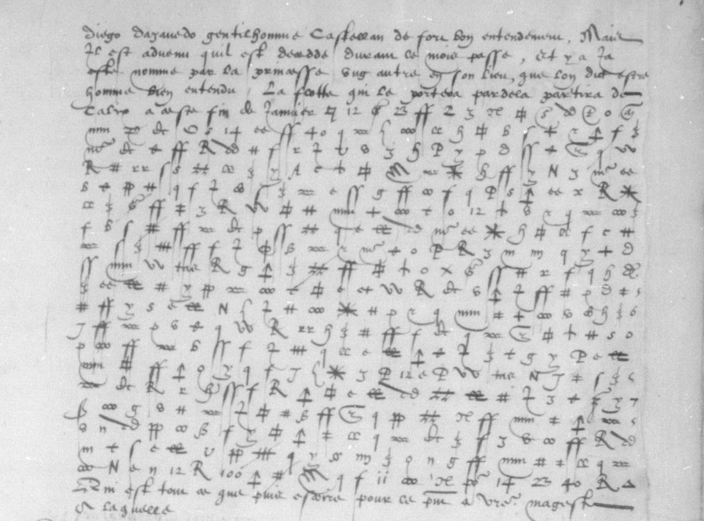
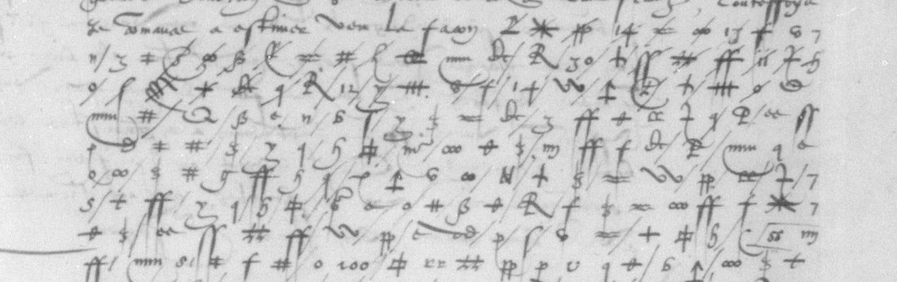

At a glanceKey from adjacent plaintext · 8,819 of 8,857 cipher signs
- The letters
- Michel de Seure, Henri II’s ambassador in Lisbon, to the secretary of state de Fresne (12 December 1558) and to the king (12 and 27 December 1558). The 12 December letter to the king survives in three copies.
- Where
- Bibliothèque nationale de France, français 3151 nos. 39–41 and 43–44 (Gallica btv1b9059865k, views 72–87); catalogue item 10. No. 42 is a letter of Marshal Brissac.
- The cipher
- 118 sign types: 55 letter signs, most letters with two or three of them, 18 syllable signs, 22 word signs (portugal, perou, roy d’espaigne…), 21 nulls and a sign that cancels the one before it. The text runs on without word breaks.
- How it was deciphered
- A leaf bound with the letters holds three short deciphered paragraphs, A, B and C, matching no. 44. Robinson used them as cribs, transcribed every letter, annealed the key and corrected it sign by sign against the scans.
- What it says
- The Peru fleet’s arrival at Seville with silver, treasure unloaded in the Azores and handed to Philip’s officers, Spanish ships gathering at Málaga, Alicante and Cádiz, debts at the Medina fairs, and Seure’s own unpaid allowances.
- Still open
- One word sign with no value (once, probably vostre), one conjectural value (escuz), and 27 damaged or unidentified signs.
- Credit
- Key, transcription and decipherment by Angus Robinson (pull request #40, 16 October 2026). Checked here.
This page was split on 14 October 2026 from the joint entry for catalogue item 10. La Guiche’s Rome letter of 1551 and Noailles’s Venice letter of 1558 are in other ciphers, each with its own page: La Guiche to Montmorency, 1551 and Noailles to the Cardinal de Lorraine, 1558.
01 The letters
Michel de Seure, a Knight of Malta (commandeur), was Henri II’s ambassador at the Portuguese court. Five of his letters in fr. 3151 mix clear French with long cipher passages. The counts are measured here from Robinson’s transcription. A “position” is one written sign, nulls included. A “signifying” position is one that is neither a null nor cancelled.
| No. | To, date | Gallica views | Cipher positions | Given a value |
|---|---|---|---|---|
| 39 | de Fresne, 12 Dec 1558 | 72–73 | 405 | 365 of 366 |
| 40 | Henri II, 27 Dec 1558 | 74–75 | 1,474 | 1,380 of 1,385 |
| 41 | Henri II, 12 Dec 1558 | 77–78 | 1,921 | 1,792 of 1,799 |
| 43 | Henri II, 12 Dec 1558 | 81–83 | 3,622 | 3,440 of 3,464 |
| 44 | Henri II, 12 Dec 1558 (“Dupplicata”) | 85–87 | 1,983 | 1,842 of 1,843 |
Nos. 41, 43 and 44 are three copies of the letter of 12 December. Measured on the decipherment, no. 41’s three passages share 1,295, 449 and 427 letters with no. 44’s sections A, B and C. No. 43’s long passage and its postscript carry the same text again. The dates and addressees are from Robinson’s readings: some dockets disagree with the closing dates, and no. 39’s address panel names the duc de Guise. The survey of 21 September had counted six letters (nos. 39–44) and guessed at the duplicate pairs; both were wrong. No. 42 (view 79) is headed as Marshal Brissac’s letter to the king.

02 The cipher
Robinson’s key has 118 sign types. Many are letters of the secretary hand, Roman or Greek, used as cipher signs, which hid the system at first. His transcription labels name the shapes (H#, 3bar, Tarrow, beta…); KEY.svg draws each one.

- Letters: 55 signs. Most letters have two or three homophones: a is
H#,oorss, and e is3bar,fforq. - Syllables: 18 signs for 16 values: au, ce, co, con/com, de, est, et (three signs), il, le, luy, moy, on, par/per, que, qui, si.
- Words: 22 signs: argent, arme, castille, dict, dire, escuz, espaigne, faict, faire, la royne Marye, l’empereur, mais, navires, nous, Perou, Portugal, pour, roy de Portugal, roy d’Espaigne, sire, vostre, vous. A 23rd sign,
N10_4, has no value. - Nulls: 21 signs, among them the numerals 7, 12, 13, 14, 23, 30, 40 and 100. The survey of 21 September had taken these numerals for code groups. Nulls make up 499 of the 9,405 positions.
- Cancellation: the sign
trivoids the sign before it (49 positions).
03 No. 39, to de Fresne

The cipher passage of the letter to de Fresne is twenty rows. It opens on rumours of a withdrawal and asks for news of the outcome, « car nous commenceons a aprocher du temps »: Seure’s two-year posting was nearly over. The rest asks de Fresne to help recover his unpaid allowances and to speak for him to the Cardinal. Seure says he is in debt and wants to leave. Only one of the 366 signifying positions is unread: the word sign N10_4 in row 10, which Robinson proposes is vostre.
04 The letters to the king
12 December (nos. 41, 43, 44). The Peru fleet has reached Seville with silver; Robinson’s reading values it at about two million in gold and silver. More treasure was unloaded in the Azores, and the queen of Portugal has ordered it handed over to Philip’s officers. She has also lent Philip money from the young king’s treasury. Seure reports two French ships taken at Havana, the death of Don Diego de Azevedo and the naming of a new viceroy, and a spice fleet due to sail for Flanders. The money owed at the Medina fairs comes up as well: « ilz devoient huict cens mille escuz aux foires de Medina ». Of the three copies, no. 43 is the longest and the worst preserved. Its opening passage names a Portuguese, Anthoine Galean, and the death of Queen Mary (« le decez de la royne Marye »).
27 December (no. 40). So far Philip’s men have recovered only two hundred thousand escuz confiscated from a churchman, and the queen of Portugal has let Philip send armed ships to Terceira. Ships are gathering at Málaga, Alicante and Cádiz, and Genoa has made a loan. Seure has had no letters from the king for five months.
Robinson’s walkthrough gives the continuous French reading of every section, with an English translation: angusrobinson.github.io/historical-decipherment/seure.
05 How the key was recovered
The method is Robinson’s, from his summary and walkthrough.
- Cribs. A leaf with three short deciphered paragraphs, labelled A, B and C, is bound in the middle of a sentence. They overlap no. 44’s cipher sections A, B and C. He later found two more parallels. No. 43’s postscript enciphers the same text as no. 44 C, and no. 40’s enciphered passages have clear copies.
- Transcription and annealing. He transcribed all five letters as well as he could (397 rows, 9,405 positions). He then ran simulated annealing from the cribs, four runs in parallel.
- Splitting look-alikes. Annealing worked only in part, because several sets of similar signs had been taken as one. He split them by comparing the scans again and again across the whole corpus. About 230 proposed characters came down to 118 sign types.
- Held-out test. A section held back from the fitting deciphered cleanly with the final key.
Robinson reports that his AI collaborator, asked to transcribe one section, filled in signs from a parallel plaintext instead of reading the scan. About 19% of that section’s signs (68 of 360) were wrong, and he corrected them against the images.
06 Checks here
- Counts. The sign and output rows of
KEY_AND_DECRYPTION.txtgive 9,405 positions in 397 rows, as Robinson states. Of the 8,857 signifying positions, 8,819 carry a key value (99.6%). The other 38 are 28 unread signs and 10 read only from context. - Language. The project’s language models put the decipherment of every letter first as sixteenth-century French (−1.99 to −2.13 per letter, ahead of modern French).
- Statistical test. The test uses 9,367 read tokens and 121 types, scored with the 1530s French despatches model. The key’s reading scores −2.269 per letter. Random keys of the same shape score −5.41 (z 13.0), and the best key annealed onto shuffled ciphertext scores −3.65 (z 56). Verdict: pass.
- Images. Rows 1–9 of no. 39 were compared with view 72. The nulls 14, 13, 30, 12 and 100 and the syllable sign
55fall where his rows put them. - Three copies. The three copies of the 12 December letter were enciphered separately, and they decipher to the same text under one key.
07 What remains open
N10_4, once, no. 39 row 10: no value. Robinson proposes vostre, with Seure referring to himself (grade C).longs_x= escuz: conjectural, one occurrence (grade C).- 27 damaged or unidentified signs, most of them in no. 43 on views 82–83, are left unread. Ten more are given values from context only, for example [france] and [par] (grade M).
- Robinson estimates that the clerk made at least 18 errors in the 9,405 positions; for example, a p sign is written for g five times.
- Printed sources for Seure’s embassy have not been searched for these letters.
08 Sources
- BnF français 3151, Gallica btv1b9059865k: no. 39 views 72–73, no. 40 views 74–75, no. 41 views 77–78, no. 43 views 81–83, no. 44 views 85–87.
- Angus Robinson, key and decipherment, pull request #40 (16 October 2026): SOLUTION.txt, KEY.svg, KEY_AND_DECRYPTION.txt.
- Angus Robinson, De Seure, Lisbon, 1558: walkthrough, readings and translations.
Notes: targets/seure1558/. The survey was done in the joint entry, targets/guiche1551/, on 21 September 2026.